Why Can't I Play the Way I Practice?¶
Jeff Greenwald
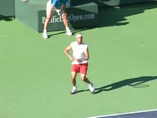
Why can't I hit my best shots when I need them--like the pros do?
"Why can't I play the way I practice?" "Why can't hit my best shots when I need them most?"
"I don't understand what happened, I was playing so well all week. Then when I played the tournament I played so much worse."
Is there a player who hasn't asked these questions? Is there a coach who hasn't heard them from his players?
Is there any way to bridge this gap between practice and competition? The answer is yes, absolutely. I know because I have helped players make this leap many times.
The performance gap between the ability to hit shots in practice versus matches is a fundamental barrier every competitive player must overcome to realize his or her potential. Unfortunately many players never do.
In this article, we'll take a look at the four barriers that keep players from playing the way that you are really capable. Then I'll introduce clear, step by step solutions to help you overcome them and unlock your ability to hit your best shots when it counts most.
The 4 Barriers
Insufficient Self Awareness
Short-Term Focus
Irrelevant Stimuli
Sub-Optimal Communication
There are four primary barriers that impede the quality of a player's performance in tournaments. These are: (1) Insufficient self-awareness. (2) Excess focus on short-term results. (3) Preoccupation with "irrelevant" stimuli. And, (4) sub-optimal communication between players and their coaches and parents.
Insufficient Self Awareness
The first barrier is insufficient self-awareness. Self-awareness is a prerequisite for realizing your potential in competition. This is because it is the foundation of learning and development, not only in tennis, but in all areas.
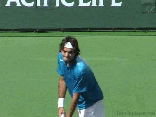
Can you feel what actually happens in your body when you play your best shots?
Sounds simple, but my experience shows it's a major problem for competitive tennis players. Time and time again I see players miss out on important learning opportunities because they are unaware of what is actually happening in their matches.
For example, a player will miss the same ball over and over, but make absolutely no effort to adjust what he or she is doing technically or tactically.
Why? The answer is that emotions get in the way of awareness. Players are either too upset to notice the need to change, or they are unclear about exactly what to change, or they are too distracted to actually execute what their brain tells them to change.
Learning to become more self-aware is a skill and can be trained. But self-awareness requires a different focus. The emphasis has to shift totally into the present, to what is actually happening moment-to-moment.
Too many players are living and dying with the outcome of every point, or sometimes every ball, and what that may mean in terms of whether they will win or lose. How wil this affect my past ranking? How will this affect my future ranking? This mind set makes it literally impossible to focus on anything else.
Andre Agassi put it this way: "There is a time to enjoy the good shots and a time to get upset about what happened, but it's not when you're out there."
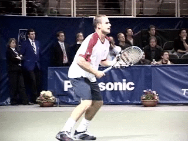
Do you sometimes obsess over the outcome of individual points?
Rather than obsessing about the outcome, players have to develop the ability to sense what is actually happening in their bodies. To do this you have to begin paying more attention to how your body feels and what it is really doing when you hit the right shots and when you make errors.
Players often speak in very general terms about what happened when they play well, "I just had a better rhythm," or "I felt more confident today." These comments are not specific enough to be really helpful.
Instead, players must learn to cultivate "kinesthetic" awareness. This is a physical or tactile memory of how your body actually feels when you strike the ball well. Being familiar with and "owning" this feeling is the key to the repeated execution of your best strokes, especially under pressure.
For example, when you hit a forehand deep in the court notice how your hand feels on the racquet, what kind of follow through you have, notice the arc of the ball, or whatever strong impressions come into your mind. Initially, this is a conscious process, but eventually this physical awareness becomes automatic. This will help you make critical minor adjustments with ease.
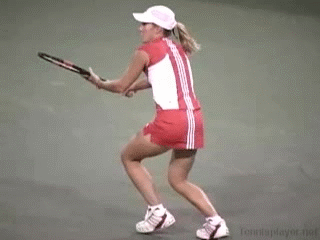
What is the kinesthetic that goes with your best shots?
Ask yourself, do you really know what it feels like when you are hitting your forehand or your backhand well? Can you imagine clearly what your body feels like head to toe when you hit your serve at the highest level? What about when you make a great volley? Can you imagine these feelings and recreate this kinesthetic experience in practice?
Developing kinesthetic feelings should encompasses every area of your game. For example, by shifting the attention into your body you will also be able to correct your footwork and your positioning to the ball because you will know exactly what feels "off."
A second important technique is learning to "scan" your body for excess tension. Typically, the shoulders and arms are where more tension is stored. If you are able to discipline yourself to feel the difference in your body when this is happening, compared to when you are swinging freely, you can then consciously relax these areas. This is another process that will become instinctive over time.
There is a final benefit to learning to play in this intuitive fashion. Your anticipation will improve because you will be more present. Your mind will be more alert and you will become aware of your opponent's patterns. This is hugely important for competitive success. For more on how this works, I highly recommend Jay Berger's two articles on Anticipation. (Click Here.)
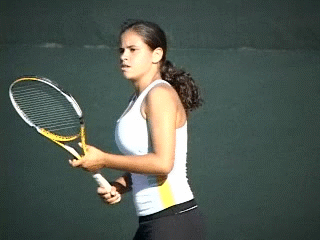
Breaking through the emphasis on results requires courage.
Excessive Focus on Short Term Results
Perhaps one of the biggest challenges in developing your game is acquiring a long-term perspective to deal with short-term setbacks.
Players obsess about rankings--that is just a fact. But being impatient with your ranking and tying your success too closely to rankings can be a major barrier to the learning process.
The fear of losing and the emphasis on short-term results prevent players from trying new things and getting out of their comfort zone long enough to see what is really possible. This fear prevents them from feeling what is happening and using the kinesthetic memories that could actually lead to the level of play they are so desperately seeking.
The question is this: Is it more important for you to win today, whatever the cost, or play tennis in a way that helps you access your potential and win in the long- run?
"There is a wasteland of talent in competitive tennis," says a top national coach on the ATP Tour. "Many players are simply chasing rankings and not building their games."
Breaking through this short-term orientation requires you to take risks, to go for your shots, even when you feel tight, and remain focused on the kind of game that will benefit you in the long run.
"Players get too caught up in the pure results of the tournament," says Tom Gullikson, former Davis Cup Captain and top-ranked doubles player on the ATP Tour in the 80's. "Players must be more honest with themselves, assess their strengths, be aware of how they are reacting to pressure, and understand why their play is breaking down at key times."
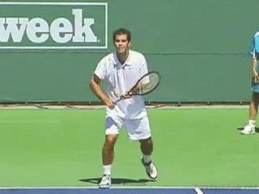
Pete Sampras evaluated his strengths and weaknesses every year he was number 1.
"Pete Sampras would do this consistently from year-to-year, even in his sixth straight year as the number one player in the world."
Easier said than done, I know. However committing to the small changes and improvements you have made in practice require this long-term vision. When you find yourself falling back into your old tentative patterns you need to be aware that this is happening and recommit to a more courageous style of play.
Committing to the plan that you and your pro or coach have developed together and executing it is the key. You have to take the chance of shifting gears, putting worry aside, and letting your feel for the game emerge.
Think about every match as a stepping stone to your best tennis in the future. Make that vision the most important thing. You have to really believe that the way you play the game is more important than the immediate result.
Performance Goals
The best way to take steps in this direction is by committing to specific performance goals, goals that can be measured in the same way as ranking, but with far more positive effect. Write these goals down--65% first serve percentage, attacking net 5 times per set win or lose, staying composed on break points, focusing on your kinesthetic keys, recognizing what you can and cannot control--whatever goals seem appropriate for where you really are.
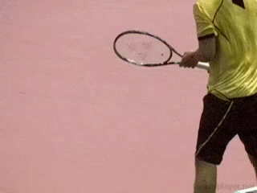
Attacking the net 5 times per set: a great example of a performance goal.
Again Pete Sampras is a great example. Developing the skills he needed to play serve and volley tennis took time that cost him results. When Pete was 16 he was ranked #60 in the national juniors. Three years later, he won the U.S. Open at age 19.
Once you are thinking more productively about your game and focus less on the immediate outcome, you will feel more permission to go for your shots. This process takes time, honesty and continual evaluation. But gradually your tournament performance will start to reflect the skills you demonstrate on the practice court.
Irrelevant Stimuli
If you raise your self-awareness on the court and have a longer-term perspective of your game, there is another benefit. Your learning curve will rise dramatically as you focus more on what is actually "relevant" during matches. Focusing on the wrong stimuli during matches is a major hindrance to developing as rapidly as possible.
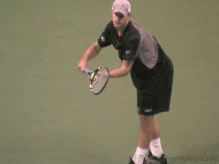
Focusing on the right stimuli is the difference in the return.
Research shows that a majority of successful pros have learned to accelerate their learning curves in this way. Damian Farrow, a scientist at the Australian Institute of Sport, who works with Olympians and other elite athletes, has recently found some important clues in identifying the differences between amateur and expert tennis players regarding their learning process.
One of the most obvious differences between these two groups is the ability for pro players to spend more time on "relevant stimuli" in matches because minds are not distracted by the irrelevant factors discussed above.
To give just one example, Farrow found that pro players were able to track the direction of the serve earlier than amateurs. This gave them a huge edge in reacting to the speed and placement of their opponents' shots.
According to Farrow, "Great tennis players can tell from the angle of a server's arm where the ball will go. Novices generally don't have that skill. But they can learn. Top tennis players can predict the direction and speed of the ball before it leaves the racket."
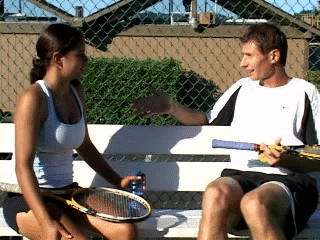
Reading the serve can double the time interval you have to move and execute.
By predicting the path of the ball from the swing they know a split second earlier where to move. "This fraction of time is game changing," says Farrow. "A serve going 120 miles per hour takes approximately a third of a second to travel the 60 feet from baseline to service line.
"This means that an expert, who doesn't have to wait until the server makes contact to read the shot, has twice as long to move, plant his feet, and swing."
Many players are blocking their ability to react to the ball because they are handcuffed by anxiety related to the possible outcome. When you stay present, stay composed, and stay engaged, a new set of learning opportunities will automatically open.
Sub-Optimal Communication
The ability to stay focused on what is relevant in competition and accelerate your learning process also requires a positive collaborative relationship between player and coach.
For the past two years I have been teaching USTA coaching workshops on how to improve communication with players, manage players' ambivalence about the change process, and helping coaches teach players to apply their skills in competition.

The communication gap between players and coaches affects learning.
Listening to reports from both players and coaches has convinced me that there is a wide spread communication gap in junior tennis that is affecting the learning process.
Here are some of the things I have heard from coaches. "My players are so caught up in the rankings and who's ranked higher that they play in fear."
"My players just won't commit to changes and actually executing them in tournaments."
"A lot of my players melt down as soon as they have their back against the wall."
"My players call me right before their matches asking me what they should do--and have no idea themselves."
On the other side of the fence I have heard this from players:
"My coach is always pushing me to try stuff that doesn't work in matches."
"My coach bombards me to change too many things, and then gets mad when I'm not able to pull them off."
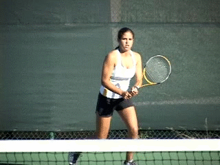
Players have to be truly open to change and trying new strategies.
"My coach never asks me how I want to play. All he does is tell stories from his experiences or talk about theories that don't really make sense to me."
The underlying problem here is that too often there is not an open line of communication between player and coach. The coach blames the player for not doing what the he says, and the player blames the coach for judging him and not believing in his abilities.
Players and coaches have to both feel they can honestly discuss what is and isn't working. The truth is coaches can be defensive when players challenge their authority or expertise.
But players have to have the freedom to voice their reservations about particular swing or strategic changes in lessons and to discuss the potential consequences in tournaments. And coaches have to have the patience to listen and understand the fears of players, even when they disagree or have another perspective.
On the flip side, players have to be truly open to change and have to work to recognize and admit what is really holding them back. The commitment to changes must be a team effort. But once there is agreement on a path of development, players need the courage to embrace the challenge and make the changes their own.
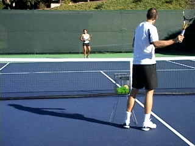
Do players sometimes get too much input in lessons?
Both sides have to be able to talk about this process, especially when it gets derailed or there are set backs. Players will inevitably revert to their old patterns on occasion, and both sides need to discuss this with a supportive attitude and without recrimination.
Case Study #1
One former college player, now at the 5.0 level, began working with me about three months ago to help him play looser in tournaments and get out of a two-year "slump." After just the third session he was more relaxed and playing better than he had in a long time.
However, that week he decided to take a lesson with a new pro. In our next session he reported that he had felt awful on the court all week--overthinking, making unforced errors, and feeling totally indecisive.
As I inquired about the lesson and what the pro had asked him to do, my client reported that "He wanted me to get my right leg through on the forehand, stay lower to the ball, drop my racquet head lower on the forehand, hit higher over the net and wait on the ball longer rather than catching it on the rise."
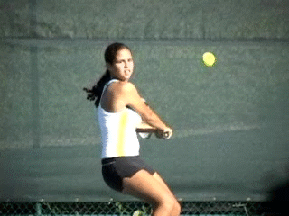
Input from coaches shouldn't undermine your positive approach.
This was just the instruction for one stroke. There was a similar litany about the rest of his game, all imparted in the course of one hour. From my vantage point, the amount of information my client received was totally overwhelming.
This was particularly true since his biggest issue was overthinking his shots and not trusting himself. I asked him to put a temporary moratorium on lessons and he agreed to put all those technical ideas on hold until he developed a more trusting, positive approach to the game. In three months, he began to flourish.
I use this example, because it highlights the frequent absence of effective, collaborative communication in traditional lessons. Of course, technical information plays a critical role in proper development. But it can only be effective when communicated in a way that takes the personality, learning style, and psychological challenges faced by the player into account.
The problem was that this particular pro did not identify any of these in my client. Likewise, my client hesitated to speak up and indicate that he felt overwhelmed and didn't give the pro a chance to adjust his agenda. Without proper intervention, this dynamic could have persisted for months, even years, with both the player and the coach suffering unnecessarily.
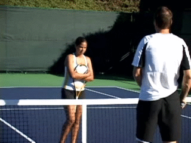
Do the goals of your coach match your goals as a player?
Case Study #2
During one of the USTA High Performance workshops I facilitated last year, I was approached by a top-national coach struggling with a very talented, nationally ranked player. He reported to me that on any given day this player could beat any player in the top fifty in the world.
However, he also explained that on an "off" day he could lose to numerous players ranked below him. Essentially, the coach was pulling his hair out because of the gap between his player's talent and his actual execution in tournaments. He asked that I work with him to see if I could help bridge this gap.
I learned that the coach's main objectives, were first, to reduce his player's emotional volatility, and second to help him find a better balance during rallies. He wanted his player to construct points with more patience and flexibility. He wanted the player to add more variety, to take some pace off from time to time and use the court a bit more.
What he wanted did not seem too much to ask in the coach's mind, and he had been pressing his player to do this for quite some time.
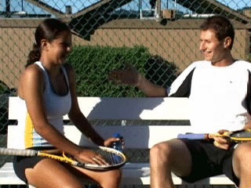
Honest, positive communication between players and coaches is critical.
When I talked to the player, however, I found that he simply could not see the value of playing the way his coach insisted. He was a winner and a shot maker. This attitude had been deeply instilled in him by his family. Period.
From his perspective, hitting every ball as hard as he could, from all angles of the court, was working--he was a top nationally ranked player. He had numerous wins over players ranked above him. He was praised for this type of play.
I began to understand the dynamics in play, but my goal was not to adjudicate the issues about playing style. I considered that a judgment call to be worked out between player and coach.
My concern was that there was very little direct collaborative discussion going on. Obviously, the player was not responsive to the coach. But on the coach's part, there was little recognition of the player's concerns about the development of his own game. The player's ambivalence was not being adequately addressed and everyone suffered as a result.
With communication the path to change and a more varied game stays open.
Gradually, through open conversation among all parties, the player began to feel that I understood his position, and that his coach did as well. The coach became more understanding and softened his approach. This in turn caused the player to become more receptive.
Eventually, this player did start playing with some more variety and developed a more "controlled aggressive" approach to rallies. The coach had him hit three different kinds of balls in practice on a regular basis, mixing different paces and spins with his ripping winners.
His training now became less of an either/or confrontation about opposite styles of play. Instead, all the options had a value and a place. As a result, he became more comfortable with varying his tactics, and his ambivalence was resolved.
The point is that the coach is critical in helping the player improve, but it is equally or more important that the player be allowed make his own observations and follow his intuition and sense of curiosity about the learning process.
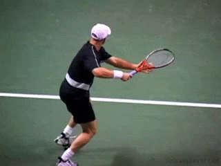
Work to overcome your barriers and discover the great tennis you really have inside you.
The ability to communicate what you notice about your game and the ambivalence you may feel about certain changes are critical to developing a sense of ownership over your game.
When something doesn't feel right in your game, you have to speak up. Tapping your ability as a player is dependent on it. You cannot be passive in the learning process.
I know there is more ability in you than you probably even imagine. If you have the nagging feeling that you can be better or aren't learning at the rate you thought you should, you are probably right. You can learn to play the way you practice--or possibly even better. Tune into how you feel on the court when you hit the ball well, focus on short-term performance goals, pay attention to what is really happening, tell your coach what you notice, and watch as your game blossoms.
The Best Tennis of Your Life
Learn how to play with freedom and win more matches! In his new book Jeff Greenwald, an elite international seniors player, coach, and psychotherapist, outlines 50 specific mental strategies to play the best tennis of your life. See how to embrace pressure, maintain confidence, and increase your focus and intensity. Jim Loehr calls Jeff's book: "a real contribution to the field of applied sports psychology." Click Here to Order!
Jeff Greenwald, M.A., MFT is a nationally recognized sport psychology consultant. Jeff has worked as a consultant for the United States Tennis Association and trains numerous players around the world on the mental game. As a player in the men's 35 and over age division he attained an ITF #1 world ranking, as well as the #1 ranking in men's singles and doubles in the United States.
Greenwald is the author of "The Best Tennis of Your Life" published by Betterway. Click Here to order. Jeff has a private practice based in San Francisco and Marin County, California. He can be reached at 415-640-6928 or by email at jeff@mentaledge.net. You can also visit Jeff's website at www.mentaledge.net.